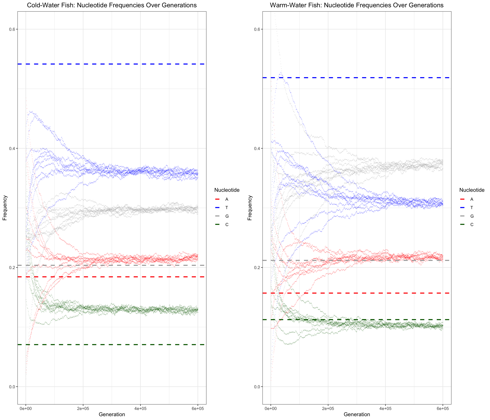

Last updated: 2025-06-06
Checks: 7 0
Knit directory:
TemperatureEffectsOnMtDNAspectra/
This reproducible R Markdown analysis was created with workflowr (version 1.7.1). The Checks tab describes the reproducibility checks that were applied when the results were created. The Past versions tab lists the development history.
Great! Since the R Markdown file has been committed to the Git repository, you know the exact version of the code that produced these results.
Great job! The global environment was empty. Objects defined in the global environment can affect the analysis in your R Markdown file in unknown ways. For reproduciblity it’s best to always run the code in an empty environment.
The command set.seed(20240719) was run prior to running
the code in the R Markdown file. Setting a seed ensures that any results
that rely on randomness, e.g. subsampling or permutations, are
reproducible.
Great job! Recording the operating system, R version, and package versions is critical for reproducibility.
Nice! There were no cached chunks for this analysis, so you can be confident that you successfully produced the results during this run.
Great job! Using relative paths to the files within your workflowr project makes it easier to run your code on other machines.
Great! You are using Git for version control. Tracking code development and connecting the code version to the results is critical for reproducibility.
The results in this page were generated with repository version 3359d51. See the Past versions tab to see a history of the changes made to the R Markdown and HTML files.
Note that you need to be careful to ensure that all relevant files for
the analysis have been committed to Git prior to generating the results
(you can use wflow_publish or
wflow_git_commit). workflowr only checks the R Markdown
file, but you know if there are other scripts or data files that it
depends on. Below is the status of the Git repository when the results
were generated:
Ignored files:
Ignored: .DS_Store
Ignored: .Rhistory
Ignored: .Rproj.user/
Ignored: analysis/.DS_Store
Ignored: analysis/.RData
Ignored: analysis/.Rhistory
Ignored: code/.DS_Store
Ignored: data/.DS_Store
Ignored: data/Codons_of_CytB_gene_Chordata.txt
Ignored: data/ColdAndWarmFishesSpectra.txt
Ignored: data/Dataset_S1.csv
Ignored: data/ExpectedFractions.txt
Ignored: data/Extra_climate_data_2025.csv
Ignored: data/Extra_temperature_grow_data_2025.csv
Ignored: data/Extra_temperature_popQB_data_2025.csv
Ignored: data/Full_fish_ecology_table_2025.csv
Ignored: data/MIDORI2_LONGEST_NUC_GB265_Cytb_BLAST.fasta
Ignored: data/MIDORI2_LONGEST_NUC_GB265_Cytb_BLAST.fasta.fai
Ignored: data/MIDORI_WG_CYTB_FISHES.csv
Ignored: data/SimulationData.csv
Ignored: output/.DS_Store
Ignored: output/tables/
Note that any generated files, e.g. HTML, png, CSS, etc., are not included in this status report because it is ok for generated content to have uncommitted changes.
These are the previous versions of the repository in which changes were
made to the R Markdown
(analysis/IIa_Cytb_Data_Analysis_Simulation_Mutagenesis.Rmd)
and HTML
(docs/IIa_Cytb_Data_Analysis_Simulation_Mutagenesis.html)
files. If you’ve configured a remote Git repository (see
?wflow_git_remote), click on the hyperlinks in the table
below to view the files as they were in that past version.
| File | Version | Author | Date | Message |
|---|---|---|---|---|
| Rmd | 3359d51 | Alya Mikhailova | 2025-06-06 | Analyses of neutral nuc content only on CYT B |
#mutSpec12all <- read_csv(here(data_dir, "MutSpecVertebrates12all.csv.gz"))
mutSpec12 <- read_csv(here(data_dir, "MutSpecVertebrates12fish.csv"))
mutSpec12Cb <- dplyr::filter(mutSpec12, Gene == "Cytb")
head(mutSpec12Cb)# A tibble: 6 × 9
Gene Class Species Mut Observed TreeLeaves MSAsize Expected MutSpec
<chr> <chr> <chr> <chr> <dbl> <dbl> <dbl> <dbl> <dbl>
1 Cytb Actinopteri Scombrop… A>C 4 68 1140 71.0 0.0326
2 Cytb Actinopteri Scombrop… A>G 21.6 68 1140 111. 0.113
3 Cytb Actinopteri Scombrop… A>T 2 68 1140 71.0 0.0163
4 Cytb Actinopteri Scombrop… C>A 3 68 1140 86.3 0.0201
5 Cytb Actinopteri Scombrop… C>G 0 68 1140 86.3 0
6 Cytb Actinopteri Scombrop… C>T 10.7 68 1140 182. 0.0340MutSpecForAnalysisCb <- mutSpec12Cb %>% dplyr::select(Class, Species, Mut, MutSpec)
MutSpecForAnalysisCb$Mut <- gsub(">", "_", MutSpecForAnalysisCb$Mut)
MutSpecForAnalysisCb <- MutSpecForAnalysisCb %>% pivot_wider(names_from = Mut, values_from = MutSpec, , values_fn = median)
colnames(MutSpecForAnalysisCb) <- c("Class",
"Species",
"T_G.H",
"T_C.H",
"T_A.H",
"G_T.H",
"G_C.H",
"G_A.H",
"C_T.H",
"C_G.H",
"C_A.H",
"A_T.H",
"A_G.H",
"A_C.H")fishEcology <- read.csv(here(data_dir, "Full_fish_ecology_table_2025.csv"))
tibble(head(fishEcology))# A tibble: 6 × 12
Species Wmax Lmax tmax FeedingType FoodTroph tm Lm Temp_min Temp_max
<chr> <dbl> <dbl> <dbl> <chr> <dbl> <dbl> <dbl> <int> <int>
1 Abbott… NA 9.10 2 <NA> NA 1 4.5 NA NA
2 Abrami… 4112. 46.9 14.4 hunting ma… 3.15 4.12 28.8 10 24
3 Abudef… NA 19.0 NA grazing on… 3.39 NA 12 NA NA
4 Acanth… NA 3 4 hunting ma… 3.12 NA NA NA NA
5 Acanth… 7200 178. 9.30 hunting ma… 4.45 2 99.3 NA NA
6 Acanth… 660 56 12.5 hunting ma… 3.5 NA 21 NA NA
# ℹ 2 more variables: Climate_zone <chr>, Temp_avg <dbl>merging <- list(MutSpecForAnalysisCb, fishEcology)
MutAndEcoCb <- merging %>% purrr::reduce(left_join, by= "Species")
temperaturestat <- summary(MutAndEcoCb$Temp_avg)
WarmFishes <- filter(MutAndEcoCb, Temp_avg > as.numeric(temperaturestat["3rd Qu."]))
Nwarm <- length(unique(WarmFishes$Species))
Nwarm[1] 32WarmFishes <- WarmFishes %>% dplyr::select(c(3:14))
WarmFishes <- WarmFishes %>% summarise_all(mean)
ColdFishes <- filter(MutAndEcoCb, Temp_avg < as.numeric(temperaturestat["1st Qu."]))
Ncold <- length(unique(ColdFishes$Species))
Ncold[1] 39ColdFishes <- ColdFishes %>% dplyr::select(c(3:14))
ColdFishes <- ColdFishes %>% summarise_all(mean)
CompWarmFishes <- WarmFishes
CompColdFishes <- ColdFishes
CompWarmFishes$Group <- "WarmFishes"
CompColdFishes$Group <- "ColdFishes"
CompMutspec <- rbind(CompColdFishes, CompWarmFishes)#Simulation ##Starting
SimulationData = data.frame() # Initialize results dataframe
GenomeLength = 10000 # Make sure GenomeLength is defined
SimulationLengthNumberOfGenerations = 600000 # Make sure SimulationLengthNumberOfGenerations is defined# Define the total number of iterations for the progress display
total_iterations_manual <- length(c('cold-water fish', 'warm-water fish')) * 10
current_iteration_manual <- 0 # Initialize iteration counter
progress_bar_width <- 50 # Width of the text progress bar in characters
if (file.exists(here(data_dir, "SimulationData.csv"))) {
SimulationData <- read.csv(here(data_dir, "SimulationData.csv"))
} else {
cat("Starting simulation...\n") # Initial message
for (MutSpecProb in c('cold-water fish', 'warm-water fish'))
{
### choose initial nucleotide frequencies: equal to 25% if InitGenome == 1 or random if InitGenome > 1
for (InitGenome in 1:10)
{
# --- Manual Progress Bar Update ---
current_iteration_manual <- current_iteration_manual + 1
percent_done <- (current_iteration_manual / total_iterations_manual) * 100
filled_length <- round(progress_bar_width * current_iteration_manual / total_iterations_manual)
bar <- paste0(rep("=", filled_length), collapse = "")
empty <- paste0(rep("-", progress_bar_width - filled_length), collapse = "")
# Use \r to return to the beginning of the line for overwrite
# Use flush.console() to ensure immediate printing
cat(
sprintf(
"\rProgress: [%s%s] %3.0f%% (%d/%d)",
bar,
empty,
percent_done,
current_iteration_manual,
total_iterations_manual
)
)
flush.console()
# --- End Manual Progress Bar Update ---
if (InitGenome == 1) {
frA = frG = frC = frT = 0.25
}
if (InitGenome > 1)
{
frA = runif(1)
frG = runif(1)
frC = runif(1)
frT = runif(1)
Summa = frA + frT + frG + frC
frA = frA / Summa
frG = frG / Summa
frC = frC / Summa
frT = frT / Summa
}
### make a genome
if (!exists("GenomeLength")) {
stop("GenomeLength is not defined. Please define it before running the script.")
}
genome = sample(c(
rep('A', round(frA * GenomeLength)),
rep('T', round(frT * GenomeLength)),
rep('G', round(frG * GenomeLength)),
rep('C', round(frC * GenomeLength))
))
##### B: DEFINE MUTATIONAL SPECTRUM
if (MutSpecProb == 'cold-water fish')
{
if (!exists("ColdFishes") || !is.data.frame(ColdFishes)) {
stop("ColdFishes is not defined or not a dataframe. Please define it correctly.")
}
VecMutSpec = c(
"T",
"A",
ColdFishes[['T_A.H']],
"T",
"C",
ColdFishes[['T_C.H']],
"T",
"G",
ColdFishes[['T_G.H']],
"A",
"T",
ColdFishes[['A_T.H']],
"A",
"C",
ColdFishes[['A_C.H']],
"A",
"G",
ColdFishes[['A_G.H']],
"C",
"T",
ColdFishes[['C_T.H']],
"C",
"A",
ColdFishes[['C_A.H']],
"C",
"G",
ColdFishes[['C_G.H']],
"G",
"T",
ColdFishes[['G_T.H']],
"G",
"A",
ColdFishes[['G_A.H']],
"G",
"C",
ColdFishes[['G_C.H']]
)
}
if (MutSpecProb == 'warm-water fish')
{
if (!exists("WarmFishes") || !is.data.frame(WarmFishes)) {
stop("WarmFishes is not defined or not a dataframe. Please define it correctly.")
}
VecMutSpec = c(
"T",
"A",
WarmFishes[['T_A.H']],
"T",
"C",
WarmFishes[['T_C.H']],
"T",
"G",
WarmFishes[['T_G.H']],
"A",
"T",
WarmFishes[['A_T.H']],
"A",
"C",
WarmFishes[['A_C.H']],
"A",
"G",
WarmFishes[['A_G.H']],
"C",
"T",
WarmFishes[['C_T.H']],
"C",
"A",
WarmFishes[['C_A.H']],
"C",
"G",
WarmFishes[['C_G.H']],
"G",
"T",
WarmFishes[['G_T.H']],
"G",
"A",
WarmFishes[['G_A.H']],
"G",
"C",
WarmFishes[['G_C.H']]
)
}
MutSpec = data.frame(matrix(
VecMutSpec,
ncol = 3,
nrow = 12,
byrow = TRUE
))
names(MutSpec) = c('From', 'To', 'Prob')
MutSpec$Prob = as.numeric(as.character(MutSpec$Prob))
ExpectedFrA = sum(MutSpec[MutSpec$To == 'A', ]$Prob) / sum(MutSpec[MutSpec$From == 'A', ]$Prob)
ExpectedFrT = sum(MutSpec[MutSpec$To == 'T', ]$Prob) / sum(MutSpec[MutSpec$From == 'T', ]$Prob)
ExpectedFrG = sum(MutSpec[MutSpec$To == 'G', ]$Prob) / sum(MutSpec[MutSpec$From == 'G', ]$Prob)
ExpectedFrC = sum(MutSpec[MutSpec$To == 'C', ]$Prob) / sum(MutSpec[MutSpec$From == 'C', ]$Prob)
Summa = ExpectedFrA + ExpectedFrT + ExpectedFrG + ExpectedFrC
ExpectedFrA = ExpectedFrA / Summa
ExpectedFrT = ExpectedFrT / Summa
ExpectedFrG = ExpectedFrG / Summa
ExpectedFrC = ExpectedFrC / Summa
for (i in 1:nrow(MutSpec))
{
if (i == 1) {
MutSpec$RulletFrom[i] = 0
}
MutSpec$RulletTo[i] = sum(MutSpec[seq(1:i), ]$Prob)
if (i > 1) {
MutSpec$RulletFrom[i] = MutSpec$RulletTo[i - 1]
}
}
##### C: MUTATE AND SAVE NUCLEOTIDE CONTENT EVERY 1000 GENERATIONS
if (!exists("SimulationLengthNumberOfGenerations")) {
stop("SimulationLengthNumberOfGenerations is not defined. Please define it.")
}
for (gener in 1:SimulationLengthNumberOfGenerations)
{
RandomPos = sample(1:length(genome), 1)
NucInRandomPos = genome[RandomPos]
Rullet = runif(1)
PotentialSubstitution = MutSpec[MutSpec$RulletFrom <= Rullet &
MutSpec$RulletTo > Rullet, ]
PotentialSubstitution$To = as.character(PotentialSubstitution$To)
if (nrow(PotentialSubstitution) == 1)
{
if (NucInRandomPos == PotentialSubstitution$From) {
genome[RandomPos] = PotentialSubstitution$To
}
}
if ((gener %% 1000) == 0)
{
Res_table <- table(genome)
# Create a dataframe with all possible nucleotides to ensure consistent structure
all_nucs_df <- data.frame(genome = factor(c('A', 'C', 'G', 'T'), levels = c('A', 'C', 'G', 'T')))
current_res_df <- data.frame(genome = names(Res_table),
Freq = as.integer(Res_table))
# Merge to ensure all A,C,G,T are present, filling missing with 0
merged_res <- merge(all_nucs_df,
current_res_df,
by = "genome",
all.x = TRUE)
merged_res$Freq[is.na(merged_res$Freq)] <- 0
Res_final_counts <- merged_res$Freq
names(Res_final_counts) <- merged_res$genome
Res <- data.frame(
A = Res_final_counts['A'],
C = Res_final_counts['C'],
G = Res_final_counts['G'],
T = Res_final_counts['T'],
Gener = gener,
InitGenome = InitGenome,
MutSpecProb = MutSpecProb
)
if (!exists("SimulationData")) {
# Initialize SimulationData if it doesn't exist
SimulationData <- data.frame()
}
SimulationData = rbind(SimulationData, Res)
}
}
}
}
# Print a newline character at the end to move to the next line in the console
cat("\nSimulation complete!\n")
}if (file.exists(here(data_dir, "SimulationData.csv"))) {
print("All done")
} else {
row.names(SimulationData) = 1:nrow(SimulationData)
SimulationData$FrA.H = as.numeric(as.character(SimulationData$A))/length(genome)
SimulationData$FrT.H = as.numeric(as.character(SimulationData$T))/length(genome)
SimulationData$FrG.H = as.numeric(as.character(SimulationData$G))/length(genome)
SimulationData$FrC.H = as.numeric(as.character(SimulationData$C))/length(genome)
}[1] "All done"#write.csv(SimulationData, here(data_dir, "SimulationData.csv"))ColorA = "red"
ColorT = "blue"
ColorG = "darkgrey"
ColorC = "darkgreen"
SimulationData = SimulationData[SimulationData$Gener <= 600000,]
simulation_data_long <- pivot_longer(
SimulationData,
cols = c(FrA.H, FrT.H, FrG.H, FrC.H), # Columns to pivot
names_to = "Nucleotide_Fr", # New column for original column names
values_to = "Frequency" # New column for the values
)
# Extract Nucleotide type (A, T, G, C) from "Nucleotide_Fr"
simulation_data_long$Nucleotide <- gsub("Fr|.H", "", simulation_data_long$Nucleotide_Fr)
simulation_data_long$Nucleotide <- factor(simulation_data_long$Nucleotide, levels = c("A", "T", "G", "C"))
# Define custom colors for ggplot2
nucleotide_colors <- c("A" = ColorA, "T" = ColorT, "G" = ColorG, "C" = ColorC)
# Horizontal line data
hlines_cold <- data.frame(
Nucleotide = factor(c("A", "G", "T", "C"), levels = c("A", "T", "G", "C")),
value = c(0.1843125066, 0.2036486321, 0.5415029364, 0.07053592541)
)
hlines_warm <- data.frame(
Nucleotide = factor(c("A", "G", "T", "C"), levels = c("A", "T", "G", "C")),
value = c(0.1570029522, 0.2119039825, 0.5186136993, 0.1124793649)
)
# 2. Create Plot for Cold-Water Fish
# Filter data for cold-water fish
cold_fish_data <- simulation_data_long[simulation_data_long$MutSpecProb == 'cold-water fish', ]
plot_cold_water <- ggplot(cold_fish_data, aes(x = Gener, y = Frequency, color = Nucleotide)) +
# Plot points for each simulation run (InitGenome). Alpha for transparency.
geom_point(aes(group = interaction(InitGenome, Nucleotide)), shape = ".", alpha = 0.3) +
# Add horizontal lines for target frequencies
geom_hline(data = hlines_cold, aes(yintercept = value, color = Nucleotide), linetype = "dashed", linewidth = 1) +
# Apply custom colors
scale_color_manual(values = nucleotide_colors) +
# Set labels and title
labs(
title = "Cold-Water Fish: Nucleotide Frequencies Over Generations",
x = "Generation",
y = "Frequency",
color = "Nucleotide"
) +
# Set y-axis limits
coord_cartesian(ylim = c(0, 0.6)) +
# A clean theme
theme_bw() +
theme(plot.title = element_text(hjust = 0.5)) # Center title
# Print the plot (optional, will display in RStudio Plots pane)
# print(plot_cold_water)
# Save the plot
ggsave(filename = "cold_water_fish_frequencies.png", plot = plot_cold_water, width = 10, height = 6, dpi = 300)
message("Saved cold-water fish plot to cold_water_fish_frequencies.png")
# 3. Create Plot for Warm-Water Fish
# Filter data for warm-water fish
warm_fish_data <- simulation_data_long[simulation_data_long$MutSpecProb == 'warm-water fish', ]
plot_warm_water <- ggplot(warm_fish_data, aes(x = Gener, y = Frequency, color = Nucleotide)) +
geom_point(aes(group = interaction(InitGenome, Nucleotide)), shape = ".", alpha = 0.3) +
geom_hline(data = hlines_warm, aes(yintercept = value, color = Nucleotide), linetype = "dashed", linewidth = 1) +
scale_color_manual(values = nucleotide_colors) +
labs(
title = "Warm-Water Fish: Nucleotide Frequencies Over Generations",
x = "Generation",
y = "Frequency",
color = "Nucleotide"
) +
coord_cartesian(ylim = c(0, 0.6)) +
theme_bw() +
theme(plot.title = element_text(hjust = 0.5))
both <- ggarrange(plot_cold_water, plot_warm_water, ncol = 2)
both
ggsave(here(plots_dir,"Simulation_plot.pdf"), plot = both, width = 20, height = 6, dpi = 300)
sessionInfo()R version 4.5.0 (2025-04-11)
Platform: aarch64-apple-darwin20
Running under: macOS Sequoia 15.5
Matrix products: default
BLAS: /Library/Frameworks/R.framework/Versions/4.5-arm64/Resources/lib/libRblas.0.dylib
LAPACK: /Library/Frameworks/R.framework/Versions/4.5-arm64/Resources/lib/libRlapack.dylib; LAPACK version 3.12.1
locale:
[1] en_US.UTF-8/en_US.UTF-8/en_US.UTF-8/C/en_US.UTF-8/en_US.UTF-8
time zone: Europe/Vienna
tzcode source: internal
attached base packages:
[1] stats graphics grDevices utils datasets methods base
other attached packages:
[1] rfishbase_5.0.1 ggstatsplot_0.13.1 broom_1.0.8 ggpubr_0.6.0
[5] ggExtra_0.10.1 geiger_2.0.11 phytools_2.4-4 maps_3.4.3
[9] caper_1.0.3 mvtnorm_1.3-3 MASS_7.3-65 ape_5.8-1
[13] magrittr_2.0.3 lubridate_1.9.4 forcats_1.0.0 stringr_1.5.1
[17] dplyr_1.1.4 purrr_1.0.4 readr_2.1.5 tidyr_1.3.1
[21] tibble_3.2.1 ggplot2_3.5.2 tidyverse_2.0.0 knitr_1.50
[25] here_1.0.1 workflowr_1.7.1
loaded via a namespace (and not attached):
[1] RColorBrewer_1.1-3 rstudioapi_0.17.1 jsonlite_2.0.0
[4] datawizard_1.1.0 correlation_0.8.7 subplex_1.9
[7] estimability_1.5.1 farver_2.1.2 rmarkdown_2.29
[10] fs_1.6.6 ragg_1.4.0 vctrs_0.6.5
[13] paletteer_1.6.0 effectsize_1.0.1 rstatix_0.7.2
[16] htmltools_0.5.8.1 DEoptim_2.2-8 deSolve_1.40
[19] Formula_1.2-5 sass_0.4.10 bslib_0.9.0
[22] emmeans_1.11.1 cachem_1.1.0 whisker_0.4.1
[25] igraph_2.1.4 mime_0.13 lifecycle_1.0.4
[28] iterators_1.0.14 pkgconfig_2.0.3 Matrix_1.7-3
[31] R6_2.6.1 fastmap_1.2.0 shiny_1.10.0
[34] digest_0.6.37 numDeriv_2016.8-1.1 rematch2_2.1.2
[37] patchwork_1.3.0 ps_1.9.1 rprojroot_2.0.4
[40] textshaping_1.0.1 labeling_0.4.3 clusterGeneration_1.3.8
[43] timechange_0.3.0 httr_1.4.7 abind_1.4-8
[46] compiler_4.5.0 bit64_4.6.0-1 withr_3.0.2
[49] doParallel_1.0.17 backports_1.5.0 optimParallel_1.0-2
[52] carData_3.0-5 ggsignif_0.6.4 scatterplot3d_0.3-44
[55] tools_4.5.0 httpuv_1.6.16 statsExpressions_1.7.0
[58] glue_1.8.0 quadprog_1.5-8 callr_3.7.6
[61] nlme_3.1-168 promises_1.3.3 grid_4.5.0
[64] getPass_0.2-4 generics_0.1.4 gtable_0.3.6
[67] tzdb_0.5.0 hms_1.1.3 car_3.1-3
[70] utf8_1.2.5 foreach_1.5.2 pillar_1.10.2
[73] vroom_1.6.5 later_1.4.2 lattice_0.22-7
[76] bit_4.6.0 tidyselect_1.2.1 miniUI_0.1.2
[79] git2r_0.36.2 xfun_0.52 expm_1.0-0
[82] stringi_1.8.7 yaml_2.3.10 evaluate_1.0.3
[85] codetools_0.2-20 cli_3.6.5 RcppParallel_5.1.10
[88] xtable_1.8-4 parameters_0.26.0 systemfonts_1.2.3
[91] processx_3.8.6 jquerylib_0.1.4 Rcpp_1.0.14
[94] zeallot_0.2.0 coda_0.19-4.1 parallel_4.5.0
[97] rstantools_2.4.0 bayestestR_0.16.0 phangorn_2.12.1
[100] scales_1.4.0 insight_1.3.0 crayon_1.5.3
[103] combinat_0.0-8 rlang_1.1.6 cowplot_1.1.3
[106] fastmatch_1.1-6 mnormt_2.1.1